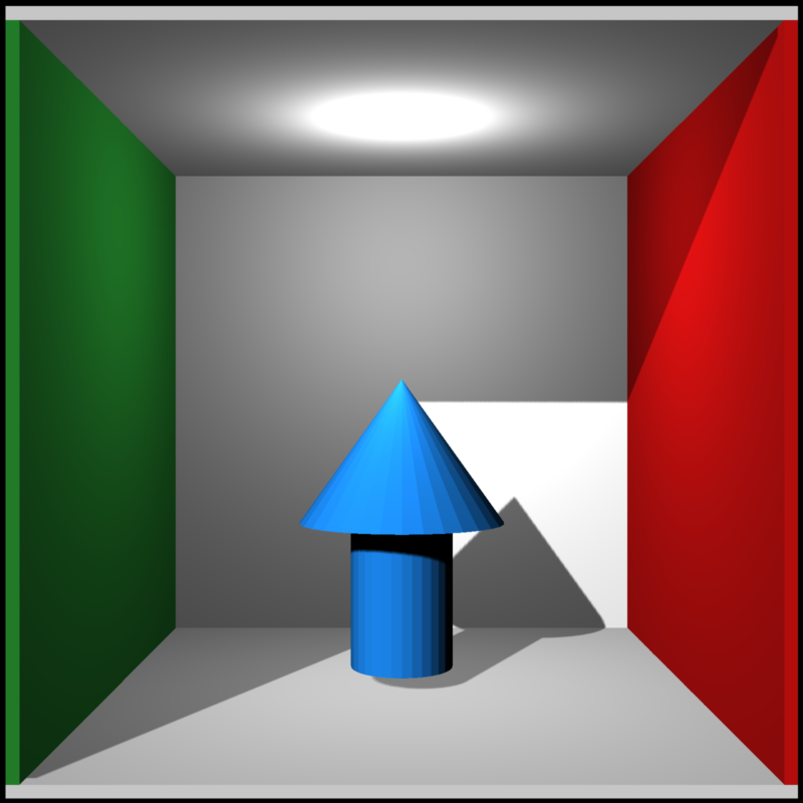
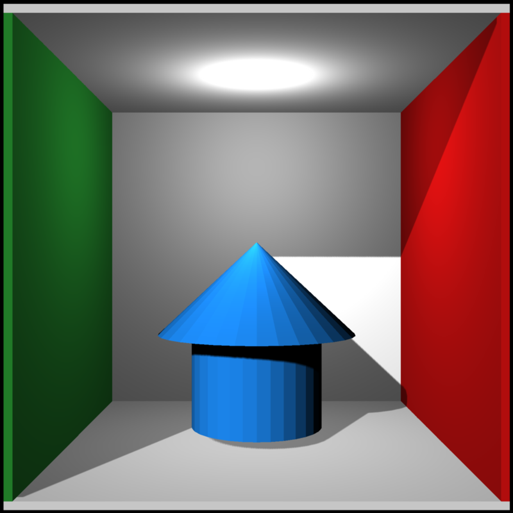
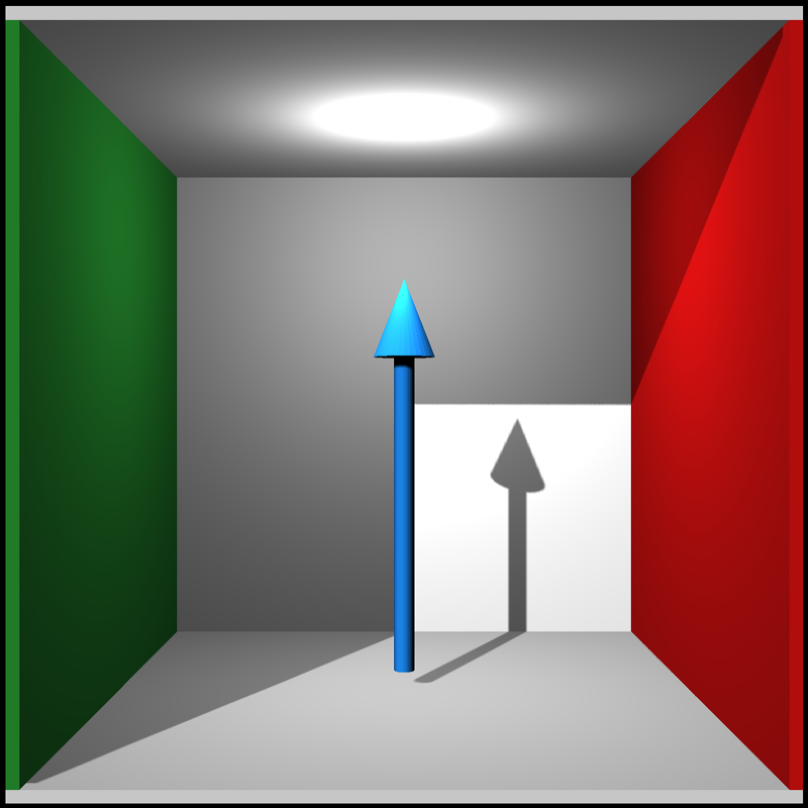

Arrow 3D Model
arrow_mesh( start = c(0, 0, 0), end = c(0, 1, 0), radius_top = 0.5, radius_tail = 0.25, tail_proportion = 0.5, direction = NA, from_center = TRUE, material = material_list() )
Arguments
| start | Default `c(0, 0, 0)`. Base of the arrow, specifying `x`, `y`, `z`. |
|---|---|
| end | Default `c(0, 1, 0)`. Tip of the arrow, specifying `x`, `y`, `z`. |
| radius_top | Default `0.5`. Radius of the top of the arrow. |
| radius_tail | Default `0.2`. Radius of the tail of the arrow. |
| tail_proportion | Default `0.5`. Proportion of the arrow that is the tail. |
| direction | Default `NA`. Alternative to `start` and `end`, specify the direction (via a length-3 vector) of the arrow. Arrow will be centered at `start`, and the length will be determined by the magnitude of the direction vector. |
| from_center | Default `TRUE`. If orientation specified via `direction`, setting this argument to `FALSE` will make `start` specify the bottom of the cone, instead of the middle. |
| material | Default `material_list()` (default values). Specify the material of the object. |
Value
List describing the mesh.
Examples
# \dontshow{ options("cores"=1) # } #Generate an arrow # \donttest{ generate_cornell_mesh() %>% add_shape(arrow_mesh(start = c(555/2, 20, 555/2), end = c(555/2, 300, 555/2), radius_tail=50, radius_top = 100, material = material_list(diffuse="dodgerblue"))) %>% rasterize_scene(light_info = directional_light(c(0.5,0.5,-1)))#># } #Generate a blue arrow with a wide tail # \donttest{ generate_cornell_mesh() %>% add_shape(arrow_mesh(start = c(555/2, 20, 555/2), end = c(555/2, 300, 555/2), radius_tail=100, radius_top = 150, material = material_list(diffuse="dodgerblue"))) %>% rasterize_scene(light_info = directional_light(c(0.5,0.5,-1)))#># } #Generate a long, thin arrow and change the proportions # \donttest{ generate_cornell_mesh() %>% add_shape(arrow_mesh(start = c(555/2, 20, 555/2), end = c(555/2, 400, 555/2), radius_top=30, radius_tail = 10, tail_proportion = 0.8, material = material_list(diffuse="dodgerblue"))) %>% rasterize_scene(light_info = directional_light(c(0.5,0.5,-1)))#># } #Change the start and end points # \donttest{ generate_cornell_mesh() %>% add_shape(arrow_mesh(start = c(500, 20, 555/2), end = c(50, 500, 555/2), radius_top=30, radius_tail = 10, tail_proportion = 0.8, material = material_list(diffuse="dodgerblue"))) %>% add_shape(arrow_mesh(start = c(500, 500, 500), end = c(50, 50, 50), radius_top=30, radius_tail = 10, tail_proportion = 0.8, material = material_list(diffuse="red"))) %>% add_shape(arrow_mesh(start = c(555/2, 50, 500), end = c(555/2, 50, 50), radius_top=30, radius_tail = 10, tail_proportion = 0.8, material = material_list(diffuse="green"))) %>% rasterize_scene(light_info = directional_light(c(0.5,0.5,-1)))#># }